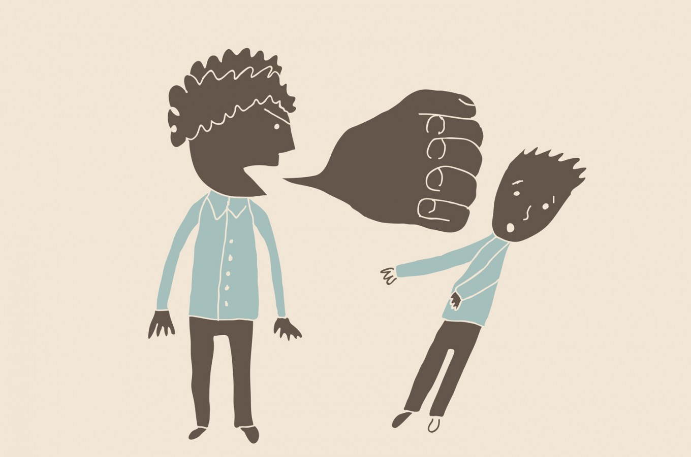

|
Yo pienso que la violencia verbal es algo que no se puede soportar porque es algo que afecta a nuestras vidas. Las consecuencias es que la persona no siempre podrá estar tolerando las malas palabras. Lo malo de la violencia verbal es que te puede llevar al borde del suicidio porque ya te hacen tanto daño que no sabes como manejar la situación y no ven las cosas con claridad como debe de ser.Lo más malo de esto es que no sabes cuando la persona está por explotar (pasar de su límite).Aveces las personas que son victimas no dicen nada por miedo o solo por que no quieren ocasionar prblemas, pero a base de eso las personas guardan resentimiento Desde mi punto de vista pienso que las palabras te pueden llegar más cuando son de tus seres queridos. |
| ¿QUÉ ES LA VIOLENCIA VERBAL? |
| PALABRAS ANTISONANTES: | GOLPES VERBALES: |
|  |
| EL BULLYING: | VIOLENCIA FAMILIAR: |
| TIPOS DE VIOLENCIA: |
| VIOLENCIA DE PAREJA : | VIOLENCIA INFANTIL: |
| VIOLENCIA LABORAL: | VIOLENCIA EN LA ESCUELA: |
| ¿Cómo evitar la violencia verbal? |
| Observar la forma de hablar y la de los demás, ya que la forma de hablar puede provocar emociones y reacciones intensas. Analizarse para detectar la delgada línea entre comunicación y agresión. Tener cuidado con lo que se mira, escucha y dice. En situaciones de abuso, la única manera de evitar el abuso es limitar el contacto con el abusador, reducir los encuentros con él o ella, y solamente interactuar con el individuo en público o cuando estemos rodeados de personas no abusivas. |
| El abuso verbal |
La violencia verbal es una forma de comunicación destructiva en la que una persona daña a otra. Se trata de un patrón comunicativo sostenido a lo largo del tiempo en el que, de manera más o menos intencional, se ejerce un maltrato verbal continuo que afecta la autoestima de la víctima provocando un estado emocional negativo y generando dudas sobre su valía como persona.En este punto, el maltratador puede comprender que ha traspasado los límites e incluso puede temer que la persona lo abandone. |
| EL MALTRATO VERBAL SÍ ES VIOLENCIA |
.gif) |